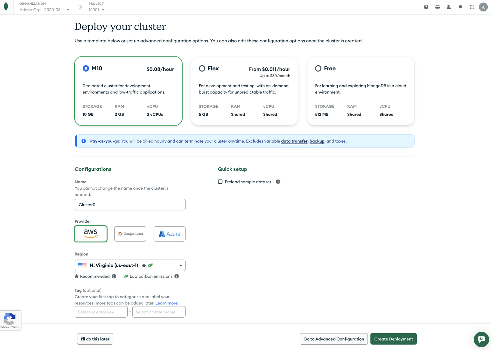

MongoDB: Atlas Growth
During my time at MongoDB, I led and contributed to a wide range of growth experiments. Many of these projects produced great results and were shipped to production and remain live today. The work spanned key parts of the user lifecycle, including onboarding, monetization, and retention.
I also contributed to experiments that did not move metrics but produced valuable insights that informed future decisions. Across all of this work, my focus was on identifying growth opportunities that addressed real user pain points while improving key business metrics.
To respect confidentiality, specific business metrics are not disclosed. Outcomes are described at a directional level.
Cluster Starter Page
The cluster creation page is one of the first experiences users encounter when setting up MongoDB Atlas and a critical onboarding step. The previous flow exposed advanced configuration options too early, creating unnecessary friction for first-time users.
Problem
New users struggled to complete cluster creation quickly due to confusion around advanced options, delaying time-to-value and negatively impacting early conversion and retention.
Before: Creating a cluster required selecting many advanced configurations.

Hypothesis
By simplifying the cluster creation flow, clarifying core configuration choices, and deferring advanced settings to a secondary page, users would complete cluster creation faster, improving cluster creation rates, time-to-value, and downstream retention.
Solution
I led the redesign of the cluster creation experience (internally known as the Cluster Starter Page), focusing on:
- Streamlining the primary creation flow
- Hiding advanced configuration behind a secondary page
- Making key decisions clearer and easier to understand for first-time users

Outcome
The redesigned experience resulted in:
- Increased overall clusters created
- Higher paid tier conversion
- Faster time-to-value for new users
Following successful experimentation, the redesign was approved and launched broadly. The page has since undergone multiple iterations.